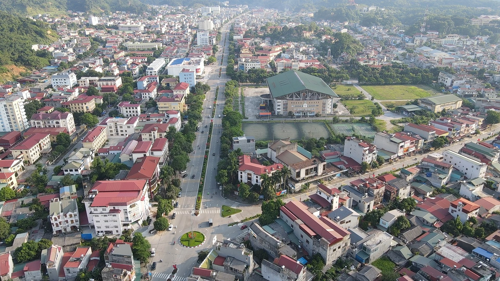
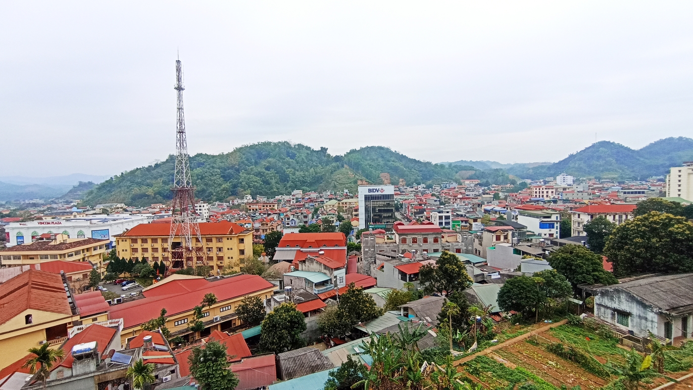
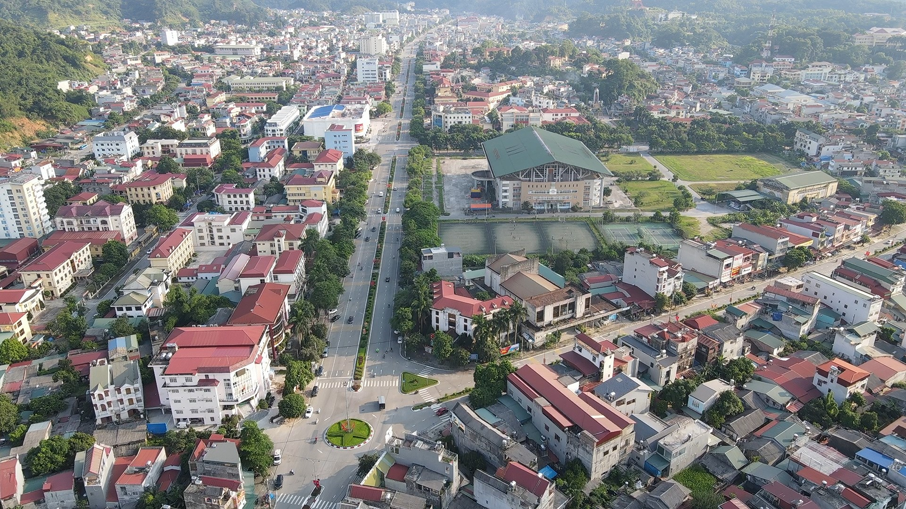
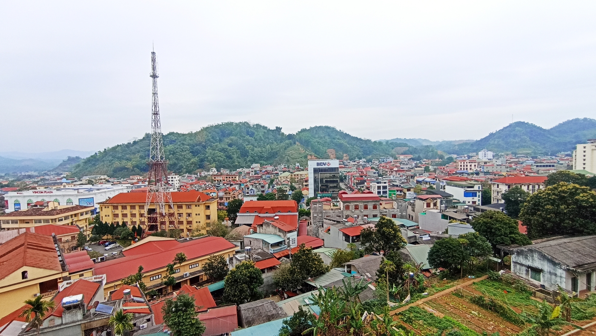

ĐẶC ĐIỂM
Giới thiệu: Bắc Kạn là một tỉnh miền núi nằm ở vùng Đông Bắc của Việt Nam, có địa hình khá hiểm trở những mang một hình dáng hùng vĩ.
Dân số: Tỉnh Bắc Kạn có dân số là 323.712 người vào năm 2022, thấp nhất trong tất cả các tỉnh thành của Việt Nam, mật độ dân số cũng rất thấp, chỉ 67 người/km2 .
Vị trí: Bắc Kạn là một tỉnh miền núi cao, địa hình bị chi phối bởi những dãy núi vòng cung quay lưng về phía đông xen lẫn với những thung lũng, phía Bắc giáp tỉnh Cao Bằng, phía Đông giáp tỉnh Lạng Sơn, phía Nam giáp tỉnh Thái Nguyên, phía Tây giáp tỉnh Tuyên Quang, diện tích là 4860 km2.

 


